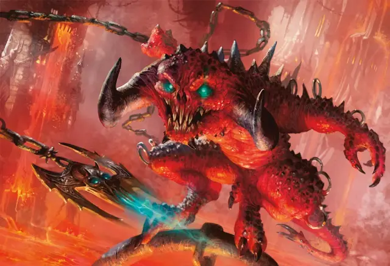

Зубоскал
Cackler
Маленькое Исчадие (Демон), хаотично-злое

Класс Доспеха 15 (природный доспех)
Хиты 10 (3к6)
Скорость 30 футов
| мод | спас | ||
|---|---|---|---|
| СИЛ | 9 | −1 | −1 |
| ЛОВ | 16 | +3 | +3 |
| ТЕЛ | 11 | +0 | +0 |
| мод | спас | ||
|---|---|---|---|
| ИНТ | 11 | +0 | +0 |
| МДР | 7 | −2 | −2 |
| ХАР | 12 | +1 | +1 |
Навыки Выступление +3, Обман +3
Сопротивление урону огонь, холод, электричество; дробящий, колющий, рубящий от немагических атак
Иммунитет к урону яд
Иммунитет к состояниям отравление
Чувства тёмное зрение 120 футов, пассивное Восприятие 10
Языки Общий, Бездны
Опасность 1/2 (100 опыта)
Бонус мастерства +2
Особенности
Врождённое колдовство. Базовой характеристикой зубоскала является Харизма (Сл спасброска от заклинания 11, +3 к попаданию заклинанием). Он может накладывать следующие заклинания, не нуждаясь в материальных компонентах:
• Неограниченно: огненный снаряд [fire bolt];
• 1/день: жуткий смех Таши [tasha’s hideous laughter];
Предсмертный смех. Когда зубоскал умирает, он издает предсмертный смех, который оставляет раны в умах близстоящих существ. Каждое существо в радиусе 10 футов от зубоскала должно преуспеть в Спасброске Мудрости Сл 11 или получить 2 (1к4) урона психической энергией.
Подражание. Зубоскал может подражать простым звукам, которые когда-либо слышал. Существо, слышащее эти звуки, может понять, что это имитация, если совершит успешную проверку Мудрости (Проницательность) Сл 11.
Действия
Укус. . Рукопашная атака оружием: +5 к попаданию, досягаемость 5 футов, одна цель. Попадание: Колющий урон 5 (1к4 + 3).
Шипастая цепь. Рукопашная атака оружием: +5 к попаданию, досягаемость 10 футов, одна цель. Попадание: Рубящий урон 6 (1к6 + 3).
Описание
Зубоскалы — это маленькие болтливые шутники, которые оживляют любое представление своими хаотичными выходками. Их оскаленная улыбка может вызвать неудержимый смех, заставляя все, даже самые ужасающие зрелища, казаться забавными. Некоторые зубоскалы преуспевают в подражании голосом и выступают как артисты, другие используют свои садистские наклонности, прячась в тенях и наводя ужас на прохожих. Некоторым исполнителям нравится наряжать зубоскалов в различные маски, шляпы и костюмы, чтобы высмеивать общественных деятелей